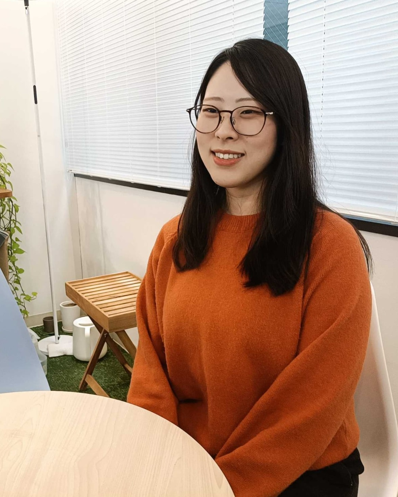

社員の声

I.M
2025年入社 芸術学部出身
入社前の自分
ーこれまでの経験や興味について教えてください。
大学時代は、図書館や不動産会社、大型スーパー、飲食店、倉庫作業など複数のアルバイトを経験しました。 異なる環境で働く中で、多様な価値観や立場に触れたことは、現在の業務にも活きていると感じています。
志望・入社理由
ー入社理由を教えてください。
技術的な仕事に携わりたいという思いもありましたが、技術そのものを追求するよりも、「誰の、どんな課題を解決するための技術なのか」を考えながら働ける環境に惹かれました。 また、少人数の組織で全体像を把握しつつ幅広い業務に関われる点にも魅力を感じています。
加えて、分からないことを曖昧にせず納得できるまで相談できる文化があり、前提や背景から整理して説明してくださる方が多く、構造的に理解を深めながら成長できる環境だと感じました。
チームで品質を高めていく姿勢にも共感しています。
業務について
ー現在の仕事内容を教えてください。
設計工程では、お客様へのヒアリングを重ねながら業務の流れを具体化し、システムの仕様へ落とし込みます。 設計は個人で完結させるのではなく、定期的なレビューを通じてブラッシュアップしていきます。 レビューでは、事前に定めた観点に基づいて議論を行い、自身では気付けなかった課題やリスクの発見にもつながっています。
ー仕事を進める上で大切にしていることは何ですか？
お客様と仕様を検討する際には、システムを作る側の視点だけでなく、実際に使う側の視点に立って対話することで、お客様の要望や不安を整理しながら、認識をすり合わせています。
また、上司や先輩に相談する際にも、相手の立場や状況を考慮して情報を整理して伝えることで、よりスムーズなコミュニケーションにつながると感じています。
入社後の発見
ー入社前のイメージと違ったことはありましたか？
ーやりがいを感じるのはどんな時ですか？
「使いやすい」「見やすい」といったお声を頂けた時はもちろん、「もっとこうしてほしい」といったご要望を頂いた時にも、業務の中で活用していただけている実感があり、やりがいを感じます。